ON'GATE: LEGACY
0.6.SilkRoad / Illustrated player & technology handbook
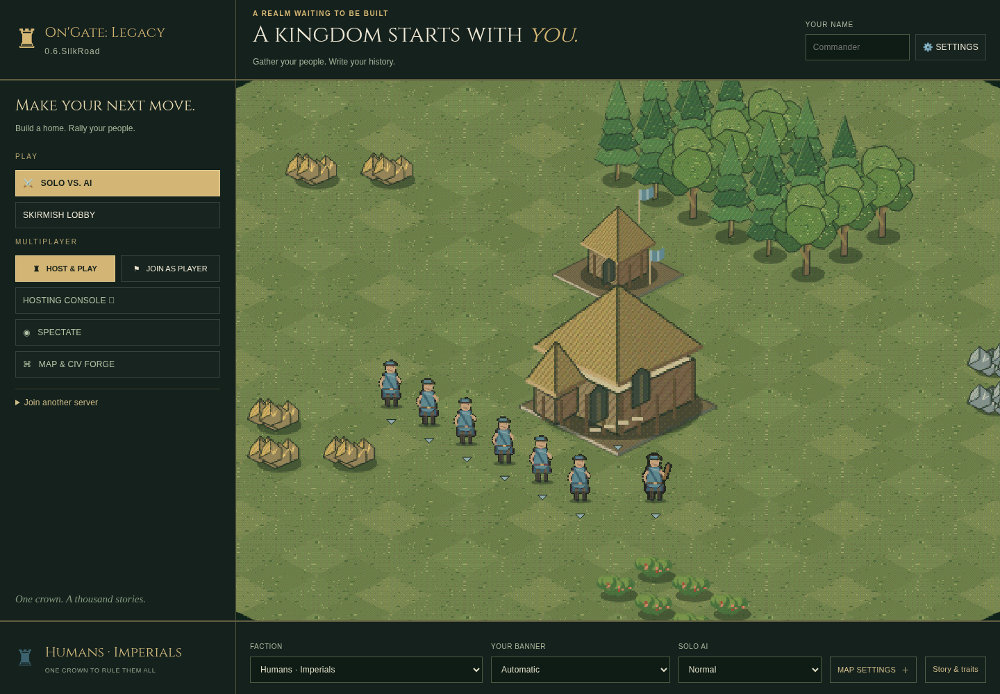
Play · Build · Host · Create
27 October 2026
On'Gate: Legacy field guide · 0.6.SilkRoad
A practical handbook for your first kingdom, a LAN evening with friends, and your first mod. Screenshots show the current game; diagrams explain the rules rather than promise an exact battle outcome. Updated 24 October 2026.
Other formats: Offline HTML handbook · Printable handbook with technology appendix (PDF).
Choose your route: Play your first match · Learn the screen · Orders and shortcuts · Build and research · Choose a people · Host with friends · Create content · Understand the technology.
New in this build: SilkRoad construction, art, browser rooms and limits. Town Centers cannot be razed; Castle builders can add Town Centers (+10 population each). Unfinished non-Town-Center foundations refund half their price when razed.
1. Start your first kingdom
- Download the Windows game ZIP. Choose Extract All; keep the executable and all its neighboring folders together.
- Open Play OnGate Legacy.cmd. Leave its server window running while you play in the browser. If it asks you to extract the game, you are probably running the launcher inside the ZIP.
- Enter your name, choose a faction and banner at the bottom of the menu, and pick Normal AI to begin. Random draws a civilization when the match starts, including saved custom civilizations.
- Choose Solo vs. AI for a quick match. Choose Skirmish Lobby to choose teams, multiple AI opponents, maps and AI difficulty before starting.
- Select a villager, then right-click berries or a tree. Select the Town Center and train villagers. Build a house before your population reaches its limit.
- Build a Barracks, gather an army and keep your final Town Center alive. A kingdom loses when its last Town Center is destroyed; the last surviving allied side wins.
The Web build runs local AI and browser-hosted WebRTC rooms using the same C++ gameplay through WebAssembly. It does not host native LAN HTTP or the desktop Steam SDK transport. A static HTTP(S) host must serve its extracted files; opening its HTML directly from disk is not the supported launch path. Platform instructions.
A useful opening, not a compulsory build order
Keep villagers working; balance food for new people with wood for buildings. Scout before committing soldiers, avoid sending workers alone into hostile territory, and invest in age advancement only when you can still defend yourself. Different peoples favor different timings.
2. Read the screen
| Area | What to use it for |
|---|---|
| Top left | Game name and version. Check the version when comparing builds. |
| Top right | Player name and settings, including graphics, sound and key configuration. |
| Left menu | Solo, configurable Skirmish Lobby, Host & Play, Join as Player and tools. |
| Center settlement | Live faction/banner preview. Its camera is locked at 1.7× on the Town Center. |
| Bottom choices | Civilization, banner, difficulty, map options and the faction's story. |
Fog covers unexplored preview terrain and all tiles outside the preview map. The menu camera does not pan. Entering a match restores normal camera control.
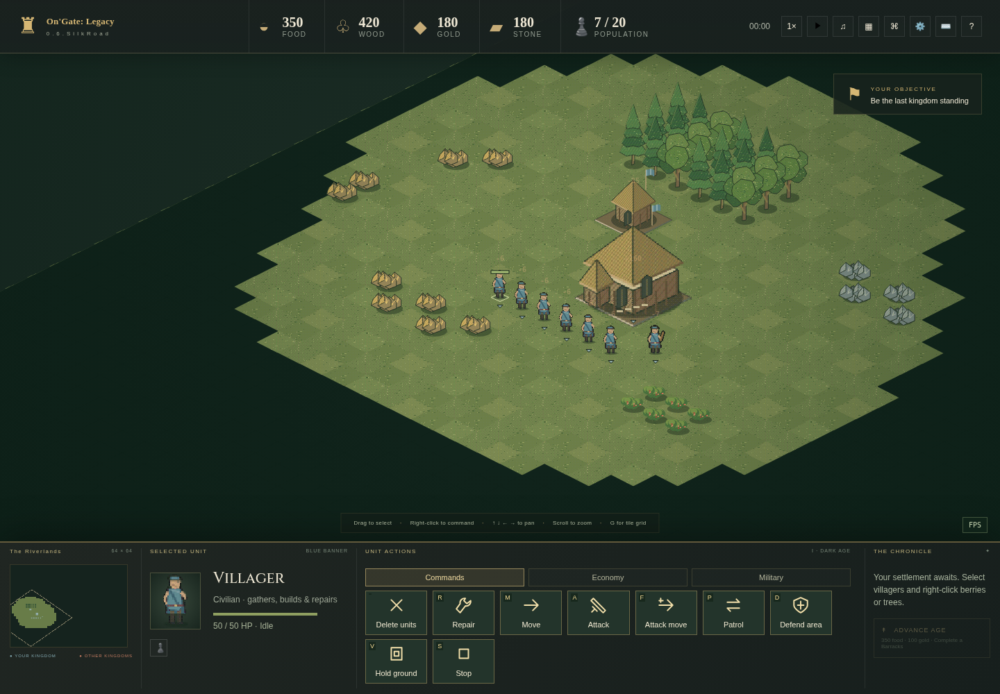
| Battlefield area | Meaning |
|---|---|
| Top resource strip | Your delivered food, wood, gold and stone; population used / supported. |
| Main map | Units, buildings, resource deposits, orders and visibility. |
| Bottom minimap | A small overview. Click it to move the camera. |
| Selected-object panel | Who is selected, health, production or research information. |
| Command panel | Orders for that selection. Villagers have Commands, Economy buildings and Military buildings tabs. |
Visible terrain is currently in your team's sight. Explored terrain remembers the land without revealing current enemy movements. Unexplored terrain remains hidden. A target outline never gives you permission to see an enemy behind fog.
3. Select and command
Click a unit; drag a box to select several; use Shift-click to adjust a selection. Right-click is contextual:
| With this selected | Right-click this | Result |
|---|---|---|
| Villager | Resource or its tile | Gather and deliver supplies. |
| Villager | Unfinished friendly structure | Help construct it. |
| Villager | Damaged completed friendly structure | Repair, consuming resources. |
| Soldier or villager | Visible enemy | Attack. |
| Mobile units | Ground | Move there. |
| Units | Healthy eligible friendly garrison building | Walk inside if capacity is available. |
| Production/garrison building | Ground or visible resource | Set its rally flag; resource rallies can assign newly trained villagers. |
Shift + right-click on ground appends waypoints. Numbered flags show the route; units find a reachable path between them. A normal new order replaces queued movement. Shift-placing buildings also queues construction jobs in the same bounded pool; gathering tasks are not queued. Each unit can have 16 pending waypoints; the whole match has a bounded shared pool.
Your essential keyboard card
These are the shipped defaults. A custom profile may differ.
| Key | Action |
|---|---|
| Arrow keys / middle-mouse drag | Pan the battlefield. Edge panning is configurable. |
| Mouse wheel | Zoom toward the pointer: 1–2× for commanders, up to 4× for spectators. |
| M / A / F | Move / attack / attack-move destination. |
| P / D / V / S | Patrol / defend area / hold ground / stop. |
| H / . / T | Select Town Center / next idle villager / train first unlocked unit. |
| R | Choose a damaged friendly building to repair. |
| Shift+H / Shift+B / Shift+F | Place House / Barracks / Farm with selected villagers. |
| Shift+K / Shift+U / Shift+C | Place Blacksmith / School / Fortress. Age and cost rules still apply. |
| G | Toggle the precise tile grid. |
| Ctrl+1…9 / 1…9 | Save / recall a control group. |
| Space | Host pause/resume. Opening the Escape menu alone does not pause a LAN match. |
| Delete | Delete selected units immediately; buildings require two confirmations. |
| Escape | Settings, rules, controls and confirmed Surrender. |
Move travels without choosing fights along the way. Attack-move engages on its route. Patrol repeats a route. Defend fights near its starting area and returns after pursuit. Hold fights in range without chasing. Stop clears orders and queued movement; an idle soldier may still defend itself.
Change bindings in Escape → Keyboard settings. Import/export transfers the keyboard/camera profile, not a saved army or match. Audio, graphics and other browser preferences are stored separately. Full control rules.
4. Grow your settlement
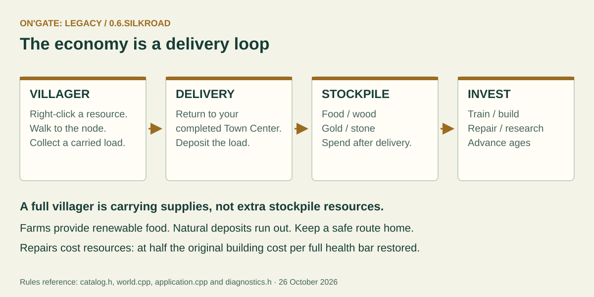
Resources in a villager's hands are not yet spendable. Keep routes to a completed friendly Town Center open. Natural deposits deplete; farms provide renewable food. There are no separate mills, lumber camps or trade markets in this roster.
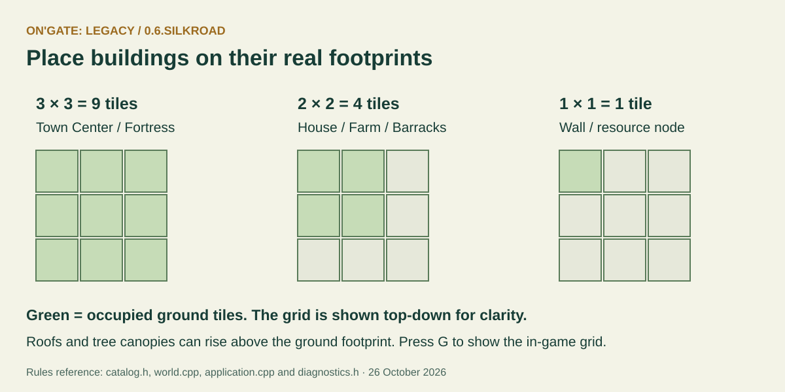
- 3×3, nine tiles: Town Center and Fortress.
- 2×2, four tiles: House, Farm, Barracks, Archery Range, Stable, Watchtower, Blacksmith and School.
- 1×1: Wall segments and natural resource nodes.
- 3×1 or 1×3: Gates; R rotates them during placement.
Roofs, flags and tree canopies rise above their ground anchors. Their apparent height does not expand occupied ground. A blocked exit waits for space; it does not discard a paid unit.
Buildings have different jobs
| Building | Main job |
|---|---|
| Town Center | Train villagers, accept deliveries, advance ages, defend and garrison. |
| House | Increase population support. |
| Farm | Renewable food worked by a villager. |
| Barracks | Infantry; Feudal Militia Drill for existing Footmen and future Militia recruits. |
| Archery Range | Ranged roster where the civilization permits one. |
| Stable | Scouts, knights or hog riders according to civilization and age. |
| School | Feudal+ Hand Tools and Wheelbarrow economic research. |
| Blacksmith | Forging and Armor for military units. Counts as Blacksmith in age requirements. |
| Watchtower | Defensive fire and a 10-unit shelter; it does not train troops. |
| Fortress | Castle Age champion production and a 20-unit garrison. |
| Wall | Drag a line of single-tile connected segments. |
| Gate | Three tiles; replaces your walls and allows allies through. |
Town Centers hold 10 units. Select a shelter and use Deploy garrison to release its occupants toward the rally flag. Spawn inside on a Town Center keeps new villagers stored until deployed or until space is made. Units inside still count toward population.
Town Centers attack at a base range of eight tiles. Living villagers and ranged units inside add one arrow each, up to seven total. Towers and Fortresses count ranged occupants for extra arrows; ordinary melee occupants do not add ranged shots. At 25% health occupants attempt emergency deployment; blocked exits retry.
Ages and research are separate decisions
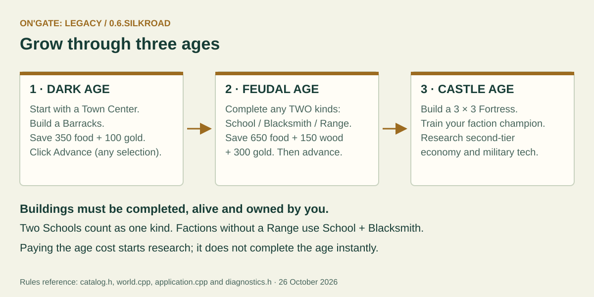
| Transition | Completed structures needed | Price |
|---|---|---|
| Dark → Feudal | Your Barracks | 350 food + 100 gold |
| Feudal → Castle | Any two distinct types from School, Blacksmith, Archery Range | 650 food + 150 wood + 300 gold |
Click Advance to begin age research after meeting these gates, regardless of selection. Two Schools do not count as two different types. Peoples without a Range use School + Blacksmith. Training and research take simulated time; age changes do not instantly grant every upgrade.
| Research | Where | Core effect when completed |
|---|---|---|
| Hand Tools I / II | School | +20% villager gather rate per level. |
| Wheelbarrow I / II | School | +12% villager movement speed per level. |
| Forging I / II | Blacksmith | +2 soldier attack per level; does not upgrade civilian or building attacks. |
| Armor I / II | Blacksmith | +1 soldier armor per level. Each hit still deals at least one damage. |
| Swordsmen | Castle Barracks | Train directly. Swordsmanship research is removed; existing Militia keep their class. |
| Militia Drill | Idle Feudal Barracks | Upgrade Footmen to Militia, including future recruits; 100 food + 50 gold, 20 simulated seconds. |
A building researches one technology at a time. Completed upgrades apply kingdom-wide and survive losing the research building. Destroying a building cancels its unfinished research without a refund. Age gates, second-level requirements, prices and civilization multipliers still apply. Full research tables and repair accounting.
Damage, repair and defeat
Repairs restore health using villagers and the original construction resource types. Restoring a full health bar costs half the building's original price; fractional charging is shared across workers. No supplies means repair waits.
Buildings show smoke at 90–99% health, embers at 70–89%, fire at 49–69%, and broken/burnt sections below 49%. Cosmetic fire is a damage indicator; it does not secretly add damage. Dead units animate and retain their sight circle for at least five simulated seconds; then normal fog returns if nothing else reveals the area. Pause freezes simulated timers.
Solo/local Surrender confirms and returns to the menu. In LAN, a defeated commander watches only the team's visibility and cannot command. If the owner explicitly leaves the council, that council closes for everyone. Detailed surrender/host behavior.
5. Choose your people
The broken crown scattered an old realm into rival peoples. Their stories inform their bonuses and allowed units. Preview the banner and read Story & traits before a match. These are broad play styles, not a guarantee of victory.
| People | Easy way to understand them | Fortress champion |
|---|---|---|
| Imperials | Fast builders and producers; softer fighters. | Paladin |
| Highlanders | Strong hill-clan melee; slower economy. No Range; thrown spears. | Oxen Lord |
| Rebels | Adaptable mixed heritage and modest economy/movement bonuses. | Assassin |
| Orcs | Durable, hard-hitting clans; slower workshops. Hog riders and thrown spears. | Warlord |
| Goblins | Fast, productive and fragile; pointed ears and ambush-minded troops. | Red Cap |
| High Elves | Strong, delicate bowkeepers; slower building/training. | Queen's High Guard |
| LongEars | Fast borderland travelers and gatherers with human/elven heritage. | Swordmaster |
| Dwarves | Tough, productive and slow; beards, crossbows and hog riders. | Steam Walker |
| Hobbits | Strong gathering and lighter combat; small frontier folk. | Duet Bard |
| Chaos Legion | Rapid recruitment, weaker gathering and undead troops. | Dark Knight |
Queen's High Guards normally carry a bow and draw a sword in close combat. Warlords and Duet Bards support nearby allies. Not every faction has every standard troop. The current procedural art uses owner-colored clothing and animated flags; Goblins, Dwarves and Hobbits are smaller than the common humanoid scale. Stories, exact traits and legal military rosters.
6. Play with friends or watch AI
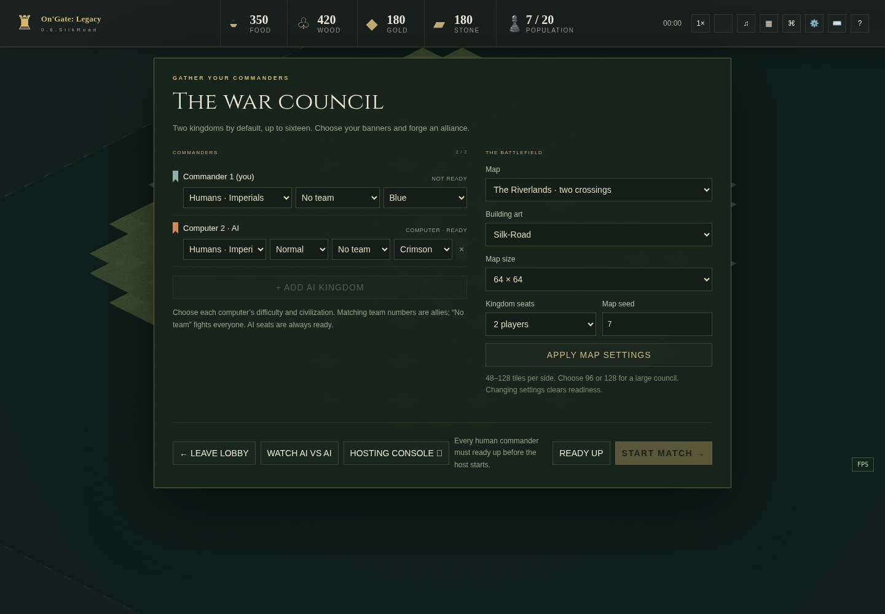
Local AI game
Open Skirmish Lobby, choose a map, capacity and teams, then add AI kingdoms and pick Easy / Normal / Hard / Expert for each. Watch AI vs AI is inside this lobby; it exchanges your playing seat for a spectator seat while retaining host ownership. It is not a separate main-menu mode.
Fresh maps and councils default to 64×64 and two kingdoms. Hosting uses a single Map size dropdown: 64×64, 80×80, 96×96, 112×112 or Custom dimensions. Width/height fields appear only for Custom. Raise capacity deliberately; a map needs enough player starts. Teams are chosen before play and share vision, but not ownership or a combined resource wallet.
Same Wi-Fi or Ethernet
- On the Windows host, run Play OnGate Legacy.cmd and choose Host & Play, or use OnGate Legacy Server.cmd for the separate Host Control window.
- Use server mode for other computers; localhost mode admits only this computer.
- Give friends the host's displayed LAN URL, including its port. They choose Join as Player in their browsers.
- Choose teams, civilizations and AI participants. Humans ready up; the owner starts the council once its conditions are met.
- Keep the server running. Explicit host departure closes the lobby; a guest's Leave releases only that guest's seat.
Wi-Fi is sufficient. Optional UDP discovery helps find hosts; gameplay itself uses TCP/HTTP, not UDP or an Internet matchmaking service. Guest Wi-Fi/client isolation or a firewall can block devices on the same named network. Allow the game on the intended private network and use the correct address/port. Wi-Fi and hardware guide.
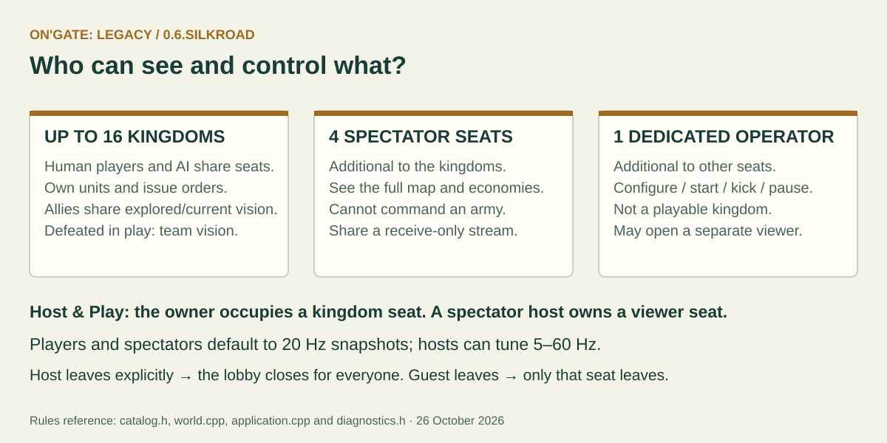
A dedicated operator is separate from the 16 kingdoms and four spectator seats. Host & Play instead puts the owner in a kingdom seat; a spectator owner can keep council authority while watching. A defeated commander stays in their kingdom seat with team-only vision, not full-map spectator privileges.
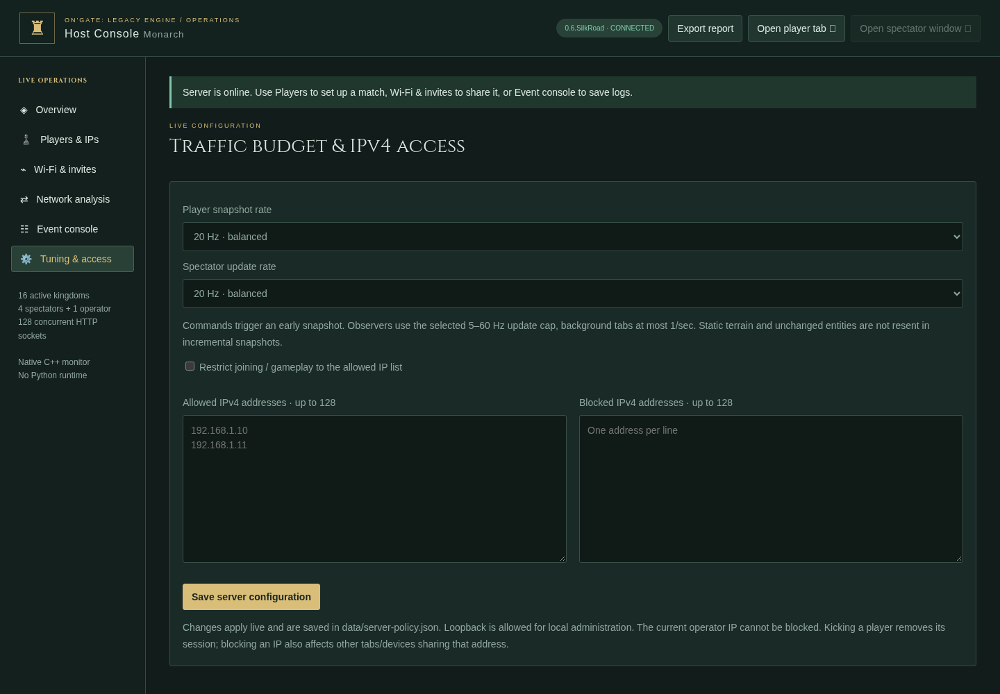
Both player and spectator snapshots default to 20 Hz, a 50 ms interval. Existing explicitly saved host rates are preserved: choose 20 Hz for both under Tuning if updating an older server. Hosts may tune 5–60 Hz. The simulation is still 20 ticks per simulated second; the screen is 60 FPS by default. These three clocks have different jobs.
Full spectators share a receive-only pushed stream; defeated commanders get private team-filtered state. TCP acknowledgements and connection/reconnection traffic still exist. Use Players to kick unwanted clients, Events to save action logs, and diagnostics for CPU/RAM, tick/serialization time and traffic. Network and monitoring details.
7. Make a map or civilization
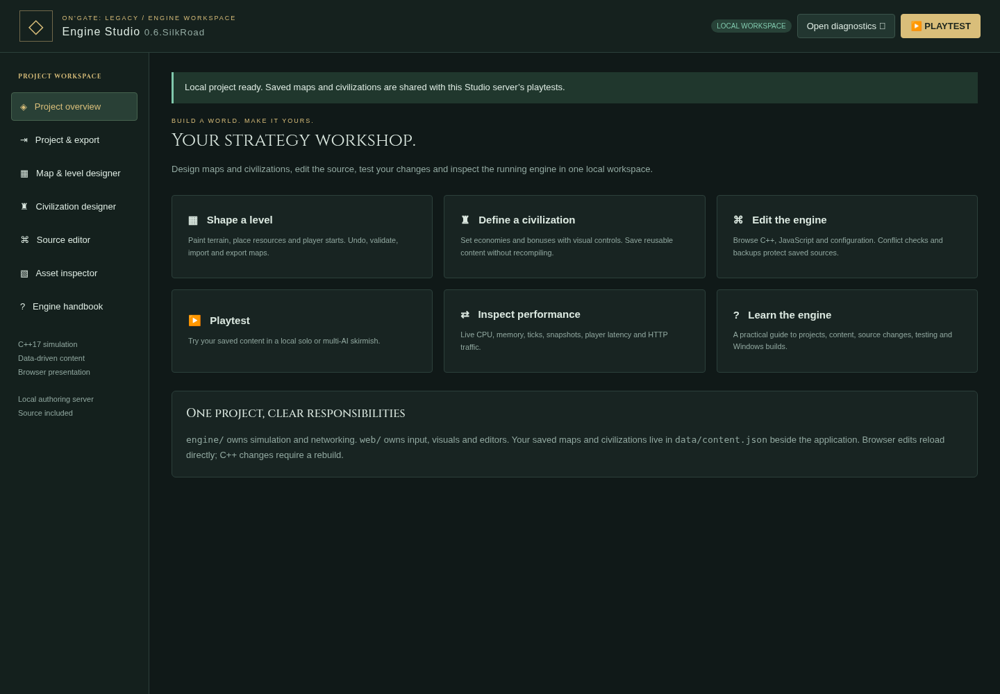
Download and extract the separate Windows Engine Studio ZIP, then run CrownfallStudio.exe. Keep its project/ directory alongside it. Studio owns a local authoring server; source editing is not exposed by an ordinary LAN game host.
| I want to… | Open this tool | Save and verify this way |
|---|---|---|
| Make a battlefield | Map & level designer | Set a unique ID/name, 48–128 dimensions and 2–16 starts; paint terrain/resources, save and playtest. |
| Make a people | Civilization designer | Set ID/name/story, resources and multipliers; save, then select it in the next playtest. |
| Inspect animations | Asset inspector | Preview poses and export PNG/JSON sprite sheets. |
| Change existing code | Source editor | Edit, save, and keep the backup. JS/JSON syntax checking is not a C++ compiler. |
| Share a game | Project & export | Choose Windows, Web or source; C++ changes need refreshed runtime templates. |
Start with a duplicate and a new ID. Place starts on walkable land with enough room for a 3×3 Town Center. Leave resource access and starting space for each side. Test each start, resource balance, routes, water crossings and a full intended lobby before sharing a map.
Saved maps/civilizations live in data/content.json, not just the browser. Source edits are in project/. Export JSON and back up both before replacing a Studio installation. Running matches keep their configured content; new content is for the next configured playtest.
The editor authors terrain, resources, starts and civilization data. Campaign triggers, a node-graph scripting engine and arbitrary prebuilt scenario armies are not implemented. New classes and rules require source work. Studio step-by-step · Map Forge · Modding.
8. Make changes without breaking the core
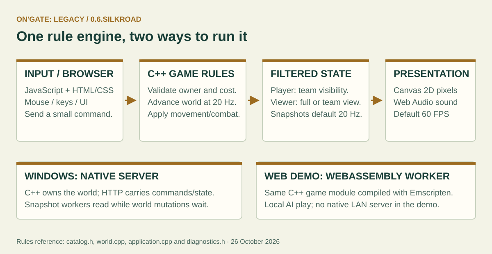
Read Technology and core structures for the stack, memory model, simulation ownership and a change-to-rebuild matrix.
- Change a saved map or civilization first when data can express the idea.
- Change browser UI/animation for presentation. A new image cannot grant extra reach, health or building space.
- Change C++ rules for real costs, legal orders, collisions, research and visibility.
- Keep the server authoritative: check owner, visibility, resources and age in C++, not only by disabling a button.
- Preserve exact footprints, team fog, bounded queues, old stable IDs and release compatibility.
- Before editing, commit a recovery point. Use the progress timeline to find earlier milestones; open old builds in separate folders.
This is a playable RTS foundation. It has no zero-memory simulation: units, maps and snapshots use bounded memory. The separate million-disc physics benchmark is not a promise of one million complete RTS units or a guaranteed frame rate on an old CPU. The current RTS capacity is 8,192 entity slots. Measured limits.
9. When something looks wrong
| Symptom | First useful check |
|---|---|
| Launcher says “extract” | Extract the entire ZIP, then run the launcher outside it. |
| Friend cannot connect | Server mode, host LAN URL/port, firewall and Wi-Fi client isolation. |
| Cannot place a building | Selected villager, full footprint clear, required age and resources. |
| Cannot train | Allowed faction/age, available population, price, queue and blocked exits. |
| Cannot age up | Completed prerequisite structures and the full resource price. |
| Cannot command | Own the selected units; ordinary/team spectators cannot command. |
| Units or camera appear slow | Enable Escape's performance overlay; compare frame time, ping/ACK and server tick/serialization times. |
| Older rate still shows 5 Hz | Host Console → Tuning → choose and save 20 Hz for spectators. |
| Edits do not appear | Correct server/project, saved content, a new configured match, or a rebuilt C++ runtime as appropriate. |
For a useful report, include the version, platform, build source from BUILD-INFO.txt, mode, map size/seed, factions, approximate entity count and exact reproduction steps. Save host logs/diagnostics and describe what you expected versus what happened. Do not publish session tokens or private network details unnecessarily.
10. Movement recovery and victory reveal
A unit that keeps trying to walk but makes less than 0.15 tile of progress from its recovery anchor for three simulated seconds is moved to the nearest safe free tile within three tiles. Its ID, health, carried resources, current order and queued destinations are preserved. Candidates must be in bounds, walkable, currently team-visible, clear of live units and outside hostile attack range. If none is safe, the unit waits and retries after one simulated second. Normal work, idling and garrisoning do not trigger relocation. Pause freezes this timer. Exceptional search work is limited to eight units per tick; large simultaneous stalls can recover later than the three-second threshold.
Once a winner is declared, the whole playable map is revealed to all remaining connections, including defeated commanders. During an unfinished match, defeated commanders remain limited to team vision. Victory does not grant command permissions, restart the simulation or reveal another kingdom's private wallet. Out-of-map preview fog and the locked main-menu camera are unchanged.
Further reading
Technology · Gameplay · Economy · Civilizations · AI · Hosting · Diagnostics · Studio · Engine · Exports · Artwork · Recovery timeline.
Current desktop and AI updates
Electron Steam480 testing explains the Alt-menu host/join controls, SDK relay boundaries and pending live-account checks. A portable desktop ZIP keeps its settings beside the executable. The installer also lets you select a custom empty folder. Four gold pan-arrow controls replace the green frame.
AI scouting uses real team line of sight: enemy bases must be discovered before raids are planned, and hidden bases are remembered at their last-seen locations. Difficulty does not grant map vision or free resources.
Technology and core structures · 0.6.SilkRoad
This explains what we use, why we use it, and what it changes in the game. For playing instructions and pictures, start with the illustrated field guide. For actual research such as Forging and Wheelbarrow, see the guide's research table and Economy.
“Core structures” here means both the engine's data structures and the rules that define buildings, units, maps and sessions. A pixel on the screen is a representation of that state; it is not the state itself.
See SilkRoad for browser-room authority/bounds and construction queues, and Steam preparation for SDK-dependent limitations. Canvas remains the renderer; no custom WebGL/WebGPU backend is shipped.
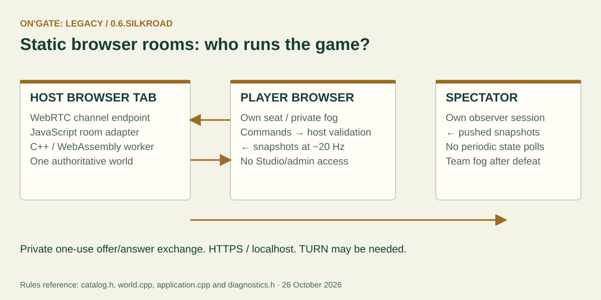
The Electron desktop build uses the same shared UI in sandboxed Chromium. Its optional Steam480 sidecar wraps the private SDK while a bounded main-process adapter permits gameplay HTTP/SSE only. AI now uses frontier scouting and last-seen base memory in fixed-size C++ records; shared rules and team fog remain authoritative.
1. The short version
Think of C++ as the referee and record book. JavaScript is the display and control desk. JSON is a form for sending instructions or saving designs. Canvas paints the picture; Web Audio produces the sound. The compiler turns source into a runnable Windows program or a WebAssembly module.
2. The technology stack and its consequences
| Technology | Job | Effect on core structures | Where to look |
|---|---|---|---|
| C++17 | Simulation, validation, AI, native HTTP, content and exports | Shared definitions plus compact changing entity records; explicit capacities and ownership. Real costs, damage, collision and vision belong here. C++ is compiled, not edited live during a match. | games/crownfall/, engine/ |
| Standard C++ containers and fixed-capacity buffers | Entity state, tile grids, queues and reusable storage | Bounds prevent unbounded growth. Shared definitions avoid copying a complete unit recipe into each unit. A fixed pool still occupies real memory. | world.h, models.h, catalog.h |
| JavaScript + HTML/CSS | Mouse/keyboard, menus, HUD, tools, interpolation | Translates user actions into commands and snapshots into UI. Changing CSS affects placement/readability, not legal costs or ground occupancy. | web/game.js, controls.js, style.css, studio.* |
| Canvas 2D | Isometric battlefield and sprite drawing | Uses projected tile coordinates, atlas cells and caches. It does not decide movement/collisions. The browser chooses its acceleration path; this is not a custom Vulkan/DirectX engine. | web/art.js, ground.js, motion.js, damage.js |
| Procedural polygons, lines, hatching and RGB dithering | Original pixel art | Bakes two selectable PNG themes used by many units, ages and poses; no runtime full-sheet generation. Changing a sprite does not change its logical footprint. Regenerate the atlas after editing its generator. | web/art.js, scripts/generate_atlas.py |
| Web Audio API | Synthesized score and sound effects | Sound follows events and user volume preferences. It never determines whether an attack actually deals damage. | web/sound.js |
| HTTP over TCP | Commands, snapshots, diagnostics and pushed native observer streams | The server authenticates session roles and filters visibility. Reliable delivery has scheduling and bandwidth costs; JSON deltas reduce repeated state, not all traffic. | engine/http.*, network.*, game application adapter |
| Optional UDP discovery | Find Windows hosts on the local network | Broadcast/replies help locate a server. It does not replace TCP gameplay, open a firewall automatically, or provide Internet matchmaking. | engine/discovery.*, network.* |
| JSON | Custom maps/civilizations, project settings, policies, API messages and profiles | Stable IDs and validation preserve compatibility. The format is data, not unrestricted executable scripting. Server content and browser preferences have different storage locations. | content.*, project.*, diagnostics.*, controls.js |
| WebAssembly + Emscripten | Compile the C++ game module for the Web demo | Runs local AI rules inside a browser worker with the browser platform adapter. It shares gameplay source with Windows, but does not expose a native LAN server. Static browser rooms use a WebRTC adapter and a hosting tab. | engine/web_main.cpp, http_web.cpp, Web export templates |
| CMake / CPack and a C++ compiler | Build native targets and package ZIPs | A C++ change requires a new runtime. Studio exports use runtime templates; stale templates export old rules. Windows can use Visual Studio, or a developer can cross-compile with MinGW. | CMakeLists.txt, cmake/, packaging/ |
| Python, Playwright and Chromium | Development tests, screenshots, atlas/export tooling | Optional authoring/verification tools. No Python interpreter is used for in-match movement, networking or the shipped Windows game/Studio. | tests/, scripts/ |
There is no Node.js server dependency for players, and no database service, remote font or downloaded art service needed for a normal offline match. Development tools may need their own installation.
3. How one command travels through the core
Example: right-click a tree with a villager selected.
web/game.jsresolves the clicked object/tile and selected IDs. The client sends an interaction command; it does not award itself wood.- The application adapter identifies the commander from its session, checks permissions and passes the order to the world.
- The C++ world validates ownership, target visibility and the interaction. The villager receives an order and destination.
- Simulation ticks move the villager, gather a carried load and return it to a completed friendly Town Center. Only delivery adds to the stockpile.
- A filtered snapshot reports the new positions, orders and resources. Player views hide enemy information they are not allowed to know.
- JavaScript interpolates the visible motion, chooses work frames, updates counters and plays appropriate sound.
A client could alter its local picture, but the server still decides the authoritative outcome. A hidden enemy must stay absent from player data, rather than merely being drawn transparent.
4. The important data structures
| Structure | Plain-language meaning | Rule to preserve when editing |
|---|---|---|
| Catalog definition | A shared recipe: cost, health, range, speed, age, producer and footprint | Use the same definition for validation and relevant UI; append stable IDs instead of renumbering saved content. |
| Entity | One changing unit/building/resource record: ID, owner, kind, position, health, orders and timers | An entity is not a private thread, a copied map or a fresh atlas. Reusing a slot must clear old orders, garrison and queue references. |
| Player/civilization state | Economy, age, researched levels and faction multipliers | A story alone grants nothing; multipliers must be validated and applied by C++. Keep private player economies private. |
| Tile grids | Terrain, occupied cells and visibility per map location | Render height is not occupied size. Town Center/Fortress = 3×3; ordinary buildings = 2×2; resources/walls = 1×1. |
| Spatial buckets | Nearby entities grouped by location | Reduce broad collision/search work. Rebuild when required so a moved unit is not checked only in its old bucket. Do not silently drop contacts to fake performance. |
| Waypoint pool | Reusable route nodes shared by mobile units | At most 16 pending points per unit and 16,384 across the match. Return nodes on cancellation, death and slot reuse. Houses do not each allocate a private route array. |
| Production/research state | Small queues, progress values and technology arrays | Production is bounded to eight queued entries per building. Research has real payment, age checks and cancellation semantics. |
| Visibility and death records | Team sight, remembered land and short sight grace after a death | Five-second grace uses simulated time. Spectators and defeated commanders have different permissions. Do not turn “left sight” into a fake death. |
| Snapshot baseline/delta | The last transmitted view and its changes | Keep entity removal, reset boundaries, fog and revision recovery correct. A smaller packet that loses a death/order is not a valid optimization. |
The current full RTS is bounded to 8,192 entity slots and maps up to 128×128. The million-disc crowd benchmark tests a different, simpler workload. Neither the benchmark nor these limits promise a million RTS units or zero RAM consumption. See engine internals, crowd benchmark and performance measurements.
5. Three clocks; three different effects
| Clock | Current normal setting | Changes what? | Does not change… |
|---|---|---|---|
| Simulation | 20 fixed ticks per simulated second, 0.05 s each | Movement, gathering, combat, timers and legal outcomes | The monitor's refresh rate. Pause and game speed affect simulated time. |
| Snapshots | Players and spectators default to 20 Hz; host tuning 5–60 Hz | How often state is requested/pushed and the bandwidth/serialization budget | The number of simulation ticks. More updates are not free CPU/network work. |
| Rendering | 60 FPS default; presets through 200, custom 1–1000 | How often the browser draws/interpolates the visible world | Attack damage, resource creation or server authority. A cap is not a guaranteed achieved frame rate. |
Native full spectators share serialization of a full-map view; defeated commanders receive private team-filtered views. Receive-only means no recurring spectator gameplay polling/ping/telemetry, not zero TCP acknowledgements or setup traffic. Waiting lobbies and background polling may use slower schedules. Previously saved explicit tuning remains in force until changed.
What “multicore” actually means here
The simulation mutates the world on one thread. A bounded worker pool can prepare independent native snapshots while the world is immutable. A barrier finishes those reads before mutation resumes. Worker count is automatic up to four by default, configurable 0–8. A worker does not run its own independent army or map simulation. WebAssembly snapshots run inline; the Web demo does not require SharedArrayBuffer or cross-origin isolation.
This design avoids copying a complete live world for every viewer. It also keeps a clear synchronization boundary. Turning movement into unsynchronized parallel writes would introduce races rather than automatically make the game faster.
6. Rendering choices and their structural impact
- Shared atlas: many units reuse generated frames. Owner-color dye protects skin, hair and metal instead of repainting the whole sprite. Unit types use quiet eight-pose idle and sixteen-pose movement/work/attack cycles.
- World-anchored ground chunks: panning translates cached terrain instead of repainting every map tile. The cache is bounded to 128 padded 258×258 RGBA canvases, about 32.5 MiB of pixel buffers; browser bookkeeping can use additional memory.
- Cropped terrain strip: ground contexts use only the terrain cells, reducing large texture uploads from the full atlas.
- Fog-aware invalidation: caches must rebuild when relevant fog, terrain, grid or map settings change. Caching an old clear tile must not reveal a newly hidden area.
- Cached minimap and off-screen rejection: avoid redrawing static overview terrain or processing visible detail for every off-screen object.
- Local camera: pan/zoom and debug camera boxes stay client-side. Camera positions are not sent in recurring player state polls. The current main-menu camera matches
2fc6e69at 1.7×; its exterior tiles remain opaque fog.
These reduce repeated work; they do not remove all rendering cost or guarantee 100+ FPS on every processor. Measured panning work · art and animation layout.
7. What changes need a rebuild?
| Intended change | Edit | Immediate structural effect | Apply it safely |
|---|---|---|---|
| New resource layout or player starts | Map designer / map JSON | Terrain/object/start data | Save, validate and configure a new playtest. No C++ rebuild. |
| Faction story, allowed data multipliers and starting supplies | Civilization designer / content JSON | Validated definition used at match setup | Save and configure the next match. New behavior outside the format needs code. |
| Menu spacing, font or icon | Browser HTML/CSS/JS | Presentation only | Reload the affected page and check narrow screens. |
| Walk/attack poses or building appearance | web/art.js, motion/damage code |
Atlas/visual selection, not hit range or footprint | Regenerate atlas.png when needed, then reload and verify bounds/facing/owner dye. |
| Gathering speed, repair cost, unit stats or age rules | Catalog/world C++ | Actual authoritative game behavior | Rebuild Windows and WebAssembly, refresh Studio runtime templates, run meaningful native/network checks and export again. |
| New unit or building class | Stable kinds, catalog, world, content validation, UI and art | Extends several coupled systems | Add all rule/production/pathing/visibility/art hooks; test save compatibility, then rebuild both targets. |
| New server role, message or snapshot field | Application/HTTP/network plus matching client | Authority, protocol and information exposure | Test permissions, resets, slow clients and team fog; rebuild affected runtimes and clients together. |
| Live rates or IP policy | Host Console Tuning | Persisted server policy | Save; inspect CPU, serialization and network counters. No compiler needed. |
| New independent game | Implement the engine application interface and game module | New rules isolated from On'Gate: Legacy | Use Orbit as a small example; rebuild and select the module in Project & export. |
A source edit is not a new executable. A sprite-sheet export is not a rebuilt simulation. Studio can edit text and validate JS/JSON, but does not include a C++ compiler, breakpoint debugger, campaign trigger graph or universal drag-and-drop game engine.
8. File map and storage
engine/ shared HTTP, platform, project, export and diagnostic services
application.* game-module interface and selection
main.cpp native process, clock and request scheduling
web_main.cpp browser/WebAssembly adapter
diagnostics.* process/timing counters and persisted host policy
project.* authorized source operations and backup boundary
games/crownfall/ this RTS's rules, content and session adapter
catalog.h types, prices, research, footprints and capacities
world.* economy, movement, collision, combat, vision and research
races.h / content.* built-in peoples and editable content validation
application.cpp lobby, roles, commands and snapshot envelopes
games/orbit/ smaller independent module proving engine separation
web/ menus, Canvas art, audio, input, host console and Studio
export-templates/ compiled Windows/Web runtimes used by Studio exports
| Stored item | Location | Backup advice |
|---|---|---|
| Saved maps and civilizations | Server/Studio data/content.json |
Export JSON and copy the file before upgrading. |
| Live host rates and IP policy | data/server-policy.json |
Preserve consciously; an old saved rate overrides a new default. |
| Source and project text | Studio's project/ |
Commit or copy changes before replacing the application. |
| Source backups from Studio saves | data/studio-backups/ |
Bounded history, not a substitute for external backups. |
| Keys, camera, audio and graphics preferences | That browser's local storage | Export keyboard/camera profiles; other preferences are separate. |
| Active session, units and selection | Live engine/browser state | Not a persistent saved match. Restarting loses the ongoing battle. |
9. Development and release checklist
- Identify the smallest layer that owns the change. Keep UI changes out of simulation when the rule is unchanged.
- Take a source/content backup. Inspect the current version and recoverable milestones.
- For C++ rule/API changes, run
make checkinternally or the documented Windows build/tests. Add a meaningful scenario for new behavior; do not rely only on a disabled UI button. - For art/layout changes, regenerate relevant assets and inspect the result. For network changes, exercise role/fog authorization, restart/delta recovery and slow/disconnected receivers.
- Rebuild affected Windows/Web runtimes, refresh templates, then export. Test actual extracted packages. A source ZIP passing tests does not prove its bundled executable is current.
- Record the exact source revision in
BUILD-INFO.txt, check ZIP integrity/SHA-256 and source/runtime parity, and publish a unique recovery milestone. Windows and Web are supported release targets; do not create new Linux/macOS releases.
Installation: C++ and general tools · Visual Studio / Windows · Studio · exports · new modules.
10. Maintain these handbooks
The editable sources are docs/field-guide.html and docs/technology.html.
The screenshots are from a real current playtest; avoid replacing them with
concept art that implies unimplemented features. SVG diagrams have descriptive
titles and text, and remain editable vector files.
python3 scripts/generate-guide-visuals.py
# Optional documentation tools only:
python3 -m pip install Markdown playwright
# Use an installed Chromium, or: python3 -m playwright install chromium
python3 scripts/capture-guide.py
python3 scripts/render-guide.py --pdf
The renderer creates offline docs/field-guide.html, docs/technology.html and
the combined docs/OnGate-Legacy-Handbook.pdf. Recheck relative links, section
anchors, mobile widths, diagram labels and the PDF after regeneration. Update
prices/capacities from the catalog and verify workflow labels against the UI.
11. Movement recovery state
Each entity now has three floats (stall time and position anchor) plus a walk
attempt flag. The current GNU x64 build measures 196 bytes per Entity and
2,784,464 bytes for fixed World storage; process/browser/network memory is
additional. Recovery uses simulated time, local buckets and a bounded nearby
search. It repositions the same entity; it does not create/delete a replacement
or consume population/resources. Waypoint pools and cargo stay intact.
Victory reveal is authoritative: the world marks playable tiles visible and explored for all players after a winner is decided. Full and delta snapshots carry that fog transition. Before victory, normal player/team filters apply.